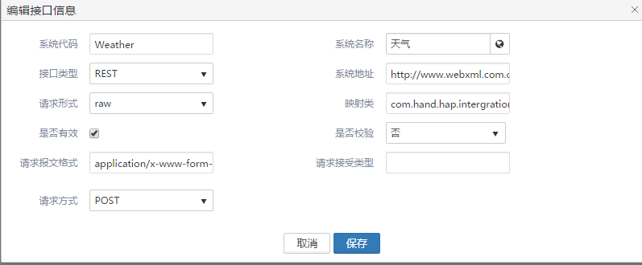
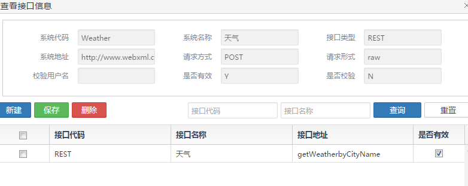
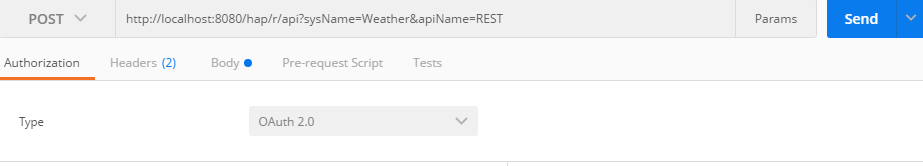
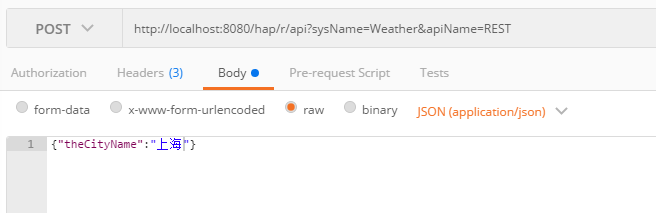
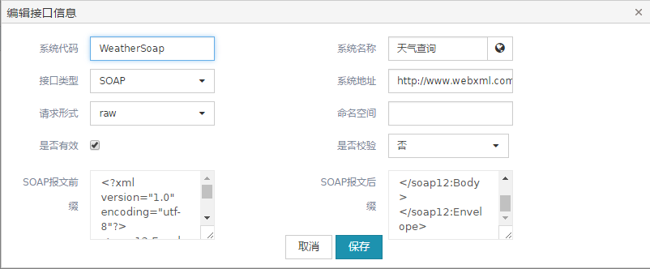
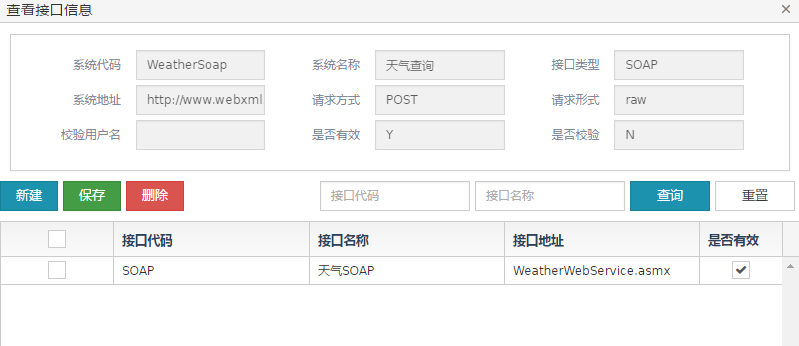

接口管理功能
HAP 框架支持接口的透明转发，通过在接口定义中定义不同的接口，HAP 把这些这些统一以/r/api暴露出来，请求参数和返回内容都统一为json数据，开发人员需要把json数据转换为接口实际需要的参数类型。提供接口调用记录功能。
接口定义
目前框架支持SOAP,REST,PLSQL三种类型的接口透传服务
下面以查询指定城市天气为例，进行配置说明
http://www.webxml.com.cn/WebServices/WeatherWebService.asmx?op=getWeatherbyCityName
REST
1.首先定义好系统接口信息，如下图

映射类由开发人员编写，负责将用户请求的JSON数据转换为第三方接口实际需要的数据格式，将第三方接口返回的数据转换为JSON数据
需要继承HapTransferDataMapper抽象类，可以参考 com.hand.hap.intergration.util.ExampleMapper
注意对于SOAP类型的接口，默认进行xml到json的数据转换，不需要配置映射类， 对于PLSQL的调用，目前不支持映射类的配置。 对于get方式的rest类型的请求，也做了参数的自动处理。所以一般情况，编写的映射类，是处理post请求的参数转换问题，比如案例，查询天气的第三方接口，仅支持application/x-www-form-urlencoded的报文格式，所以需要手动将客户以json形式传入的参数，转换为相应格式(theCityName=string)，当然映射类可以对返回的数据进行转换，由于接口透传统一将返回内容以json格式返回，所以需要将第三方返回的数据进行转换。
2.接下来定义该系统下具体的接口服务，如下图

最终调用的接口地址是系统地址与接口体质拼接而成
用户可以访问{具体的项目地址}/r/api
注意因为oauth2验证，需要获取 通过请求参数sysName和apiName调用第三方接口
sysName是系统代码 apiName是接口代码

此时的body参数，必须以json格式请求到hap

注意需要oauth2验证，带上token请求。 xxx/oauth/token?client_id=client2&client_secret=secret&grant_type=password&username=admin&password=admin 然后在url后面拼接参数access_token=获取到的token
SOAP
1.定义好系统接口，注意系统名称做了唯一性验证

关于SOAP报文 天气查询服务提供的报文格式为
<?xml version="1.0" encoding="utf-8"?>
<soap:Envelope xmlns:xsi="http://www.w3.org/2001/XMLSchema-instance" xmlns:xsd="http://www.w3.org/2001/XMLSchema" xmlns:soap="http://schemas.xmlsoap.org/soap/envelope/">
<soap:Body>
<getWeatherbyCityName xmlns="http://WebXml.com.cn/">
<theCityName>string</theCityName>
</getWeatherbyCityName>
</soap:Body>
</soap:Envelope>
<theCityName>string</theCityName>
需要动态改变的是这里，所以前缀则是之前部分，后缀是后面的部分。 theCityName则由请求方传入，hap会自动根据前后缀和参数生成完整的报文进行请求。
2.定义具体的接口服务

调用和REST风格的一模一样，改一下sysName和ApiName即可，所以对于用户来说，不需要知道究竟是用什么方式请求的第三方服务，按照参数规范调用即可。
调用记录
提供入站请求和出站请求的调用监控
对于restful风格的请求，可以在想要监控的URL服务对应的具体方法上加HapInbound注解
可以参考com.hand.hap.intergration.controllers.HapApiController HapInbound的属性apiName,如果定义在描述维护里，则可以实现接口名称的多语言显示
对于webService的请求监控，是通过CXF的feature来实现的。支持cxf客户端和服务端的调用监控
spring/applicationContext-cxf.xml里的如下配置，开启全局的feature
<!--ws的调用记录feature--><bean id = "hapInvokeFeature" class="com.hand.hap.intergration.ws.feature.HapInvokeFeature"></bean><cxf:bus> <cxf:features> <ref bean="hapInvokeFeature"></ref> </cxf:features></cxf:bus>